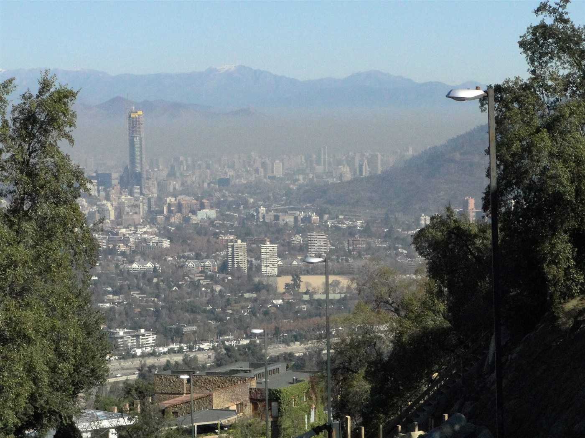

La tapa que atrapa el smog sobre las ciudades
Normalmente, el humo de una chimenea sube, se mezcla y se pierde en el cielo. Pero hay días en que se queda quieto a pocos metros del suelo, como si chocara contra un techo invisible. Ese techo existe: es una capa de aire caliente encima de una capa más fría. En diciembre de 1952, una de esas tapas se posó sobre Londres, y miles de personas murieron.
En condiciones normales, la temperatura baja con la altura. Pero a veces, en alguna capa, sube. Eso es una inversión: lo que en meteorología se llama un gradiente térmico negativo [1]. Según vimos en la estabilidad atmosférica, el aire que asciende se enfría, así que la parcela que llega a una inversión queda más fría que el aire de alrededor, pierde flotación y vuelve a bajar. Por eso, una inversión es una capa muy estable: el aire de abajo casi no se mezcla con el de arriba (un razonamiento propio).
La tapa de la olla: pensá en el aire cercano al suelo como el contenido de una olla. Lo que se le agrega, como humo, gases y polvo, se reparte por el volumen disponible. En un día normal, esa olla mide kilómetros de alto. Con una inversión baja, le ponen una tapa a pocos cientos de metros, y lo mismo que se emite queda mucho más concentrado.
Por el aire que baja. Un anticiclón empuja aire hacia abajo, y ese aire se calienta al descender. Así se crea una inversión, con el aire cercano al suelo más frío que el de arriba [2]. Es la misma compresión que da el aire seco de la rama descendente de la celda de Hadley.
Por el suelo que se enfría. En una noche despejada, el suelo pierde calor por radiación de onda larga y se enfría [2]. El aire en contacto con él se enfría también. Si está húmedo, llega a su temperatura de rocío y condensa: es la niebla de radiación [2].
El Servicio Meteorológico del Reino Unido cuenta bien el caso [2]. Noviembre y el comienzo de diciembre de 1952 habían sido muy fríos, y la gente quemaba grandes cantidades de carbón en sus casas [2]. Normalmente el humo habría subido y se habría dispersado, pero un anticiclón creó una inversión, y el humo quedó atrapado, junto con las partículas y gases de las fábricas y la contaminación que traía el viento del este [2].
El 5 de diciembre, el cielo estaba despejado, el viento era suave y el aire cercano al suelo, húmedo: condiciones ideales para la niebla de radiación [2]. Bajo la inversión, un viento muy débil subió el aire saturado y formó una capa de niebla [2]. Las partículas de contaminación, además, favorecen la niebla, porque el agua se adhiere a ellas [2]. El sol estaba tan bajo que no llegaba a disiparla [2], y la visibilidad cayó a pocos metros [2].
Cada día se emitieron unas 1000 toneladas de partículas de humo y 2000 toneladas de dióxido de carbono, y 370 toneladas de dióxido de azufre se convirtieron en 800 toneladas de ácido sulfúrico [2]. La niebla se fue el 9 de diciembre. Se sabe que murieron alrededor de 4000 personas a causa del episodio, aunque podrían haber sido muchas más [2]. Las leyes de aire limpio de 1956 y 1968 se dictaron para evitar que se repitiera [2].
El fluido es el mismo, cambia lo que le ponemos: la inversión no produce contaminación: solo impide que se diluya. Londres ya tenía episodios parecidos, y una niebla de diciembre de 1873 había subido la mortalidad un 40 % [2]. Lo que hizo letal a 1952 fue la coincidencia de una tapa persistente y una ciudad quemando carbón.

Una inversión térmica es una capa donde la temperatura sube con la altura. El aire de abajo no puede atravesarla, y actúa como una tapa sobre lo que se emite cerca del suelo. Se forma cuando un anticiclón hace bajar aire que se calienta, o cuando el suelo se enfría en una noche clara. El Gran Smog de Londres mostró lo que pasa cuando eso coincide con una ciudad llena de humo.
Pregunta para la comunidad: Una ciudad en un valle rodeado de montañas suele tener peor aire en invierno. ¿Qué pasaría con el aire frío de las laderas por la noche? ¿Qué podría romper una inversión ya formada?